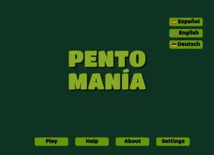
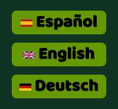
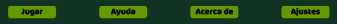
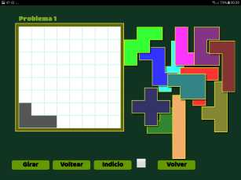
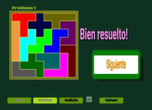

PENTOMANIA

Descripción
Es una serie de rompecabezas, o puzzles, que demandan razonamiento, familiarización con las piezas involucradas, prueba y error, y paciencia para ser resuelto.
En que consiste?
Se trata de una serie de rompecabezas con piezas poligonales.
Hay doce pentominos, piezas formadas por la union de cinco cuadraditos unitarios, y cinco tetrominos, piezas formadas por la union de cuatro cuadraditos unitarios.
Los problemas que se plantean consisten en cubrir la grilla de 8 x 8 cuadraditos con los doce pentominos y un tetromino.
Puedes utilizar la versión web o bién descargar la versión móvil para tablets y celulares.

Pantalla inicial
Desde esta pantalla se puede
- cambiar el idioma de preferencia
- ir al juego
- ver una ayuda sintética
- ver notas acerca del juego
- seleccionar el número de problema

Selección de idioma
Botones de la pantalla inicial que permiten seleccionar el idioma preferido
- Español
- Inglés
- Alemán

Opciones desde la pantalla de inicio
Botones de la pantalla inicial que facilitan los accesos
- Botón jugar: Iniciar la resolución de un rompecabezas
- Botón Ayuda: una ayuda abreviada sobre el juego
- Botón Acerca de: información sobre el autor, sitio web y créditos
- Botón Ajustes: permite seleccionar manualmente el número de problema a resolver.

Resolver un rompezabezas
Al iniciar un juego se presenta una pantalla similar a la de la izquierda.
Las piezas del rompecabezas se pueden arrastrar, girar y voltear para situarlas en la ubicación deseada.
El giro y volteo de la pieza se concretan pulsando el boton correspondiente mientras la pieza está seleccionada. El contorno se verá rojo.
Adicionalmente se disponen de un botón que indica con que pieza se puede continuar y en que posición va colocada.
Si se quiere tener un indicación permanente sobre la posibilidad de encontrar una solución con las piezas ya colocadas se debe activar la casilla de verificación.

Rompezabezas resuelto correctamente
Al resolver correctamente un problema se presenta una pantalla similar a la de la izquierda.
Pulsando el botón 'Siguiente' se presentará el próximo problema.
El botón volver lleva a la pantalla inicial.